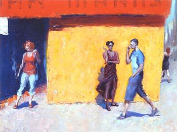

Eurotrash
Neki izrazi na engleskom baš umeju da budu zbunjujući, posebno oni koji su kulturološki uslovljeni i pri tome podložni promenama.
Prvo je ona o određenim blogerima koji joj izazivaju jake reakcije govorila kao o 'white trash'. Kad je došla lepo mi je objasnila šta taj izraz znači i zašto se može primeniti na ove slučajeva, pa sam prestala da živim u neznanju. A posle sam videla da i Wikipedia to lepo objašnjava.
***
 Onda sam u New York magazinu videla naslov gde neki tip kaže za svoj stil oblačenja da je 'Eurotrash' (video snimak) pa sam shvatila da je stvar zanimljiva, pogledala kako to izgleda i napravila mali research da vidim o čemu se tu konceptualno radi.
Ono što u stvari najtoplije preporučujem jesu razne definicije na Urban Dictionary, kad se pročitaju sve tako zajedno, fenomen postaje dosta jasniji. Ono što je jasno jeste da se pojam koristi i za ljude, i za pojave, trendove i stvari. Druga zanimljiva stvar je gomila srodnih izraza u levoj koloni od ovih definicija, sve sa prefiksom 'euro'. Sa jedne strane, inspiriše na proučavanja, a sa druge - pa ko bi sve to savladao, ovako sa daljine?
***
OK, ne da bih sad tačno znala koga ili šta bih mogla nazvati Eurotrash (ima li neko neku ideju??) ali imam neku predstavu šta bi to moglo biti. Trendi-bez praćenja trenda-(kvazi) umetničko-osoben stil, tako nekako.
Time u jednom tekstu iz 2002. piše vrlo ironično o Eurosong takmičenju kao o Eurotrashu, tako da je to neka orijentacija, takođe. Mada ne potpuna jer je ovaj pojam u stvari vrednosno neutralan, ne označava nešto ni kao dobro ni kao loše, dok je priča o Evroviziji suštinski prikazana kroz izjavu čuvenog britanskog komentatora ove manifestacije, Terry Wogana: "Everybody knows it's terrible. It has always been terrible. That's why people watch it."
A na ovom mestu, gde sam našla ilustraciju koja se prigodno zove, nalaze se i razni kokteli sa evropskim geografskim pojmovima u nazivima, te je to sigurno dobar pravac euro kretanja.
Komentari
Hm, vidis, korisna ilustracija. A sa 'euro trash' naizgled slican, al' ipak drugaciji je 'Eurosexual': http://www.urbandictionary.com/define.php?term=Eurosexual
la lara | 19.03.07 19:30
kiten | 20.03.07 04:56
Kad sam već pominjala Eurosong, evo svih ovogodisnjih polufinalista, ukljucujuci i nas, koji ce se boriti za ulazak u finale. Cesi se isticu: http://www.youtube.com/watch?v=qdYZ_vxstSc
La Lara | 20.03.07 12:26
elektrokuhinja | 20.03.07 18:13
e ja nemam nikakav drugi koment da dodam, sem sto mi se slike gore mnooooooooooogo svidjaju :)
etotako | 21.03.07 09:58
 ubipacijentic | 22.03.07 05:49
ubipacijentic | 22.03.07 05:49
 RSS feed
RSS feed
 sadržaji se objavljuju pod
sadržaji se objavljuju pod {kind=link}
Komentari
Zbog tehničkih problema komentari stigli do početka jula 2007. su sada u okviru teksta
Yahti | 02.08.07 10:23